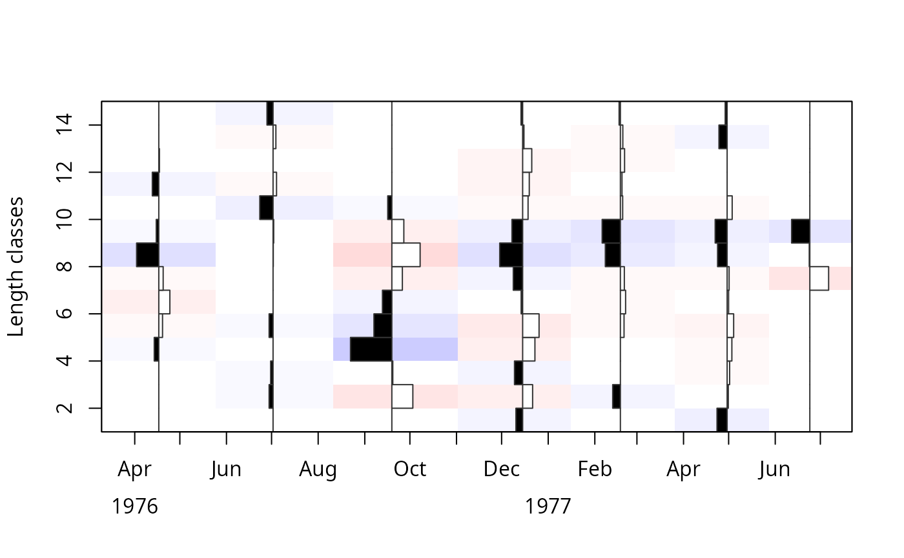
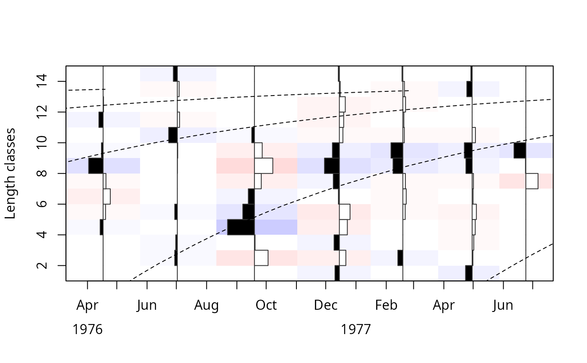
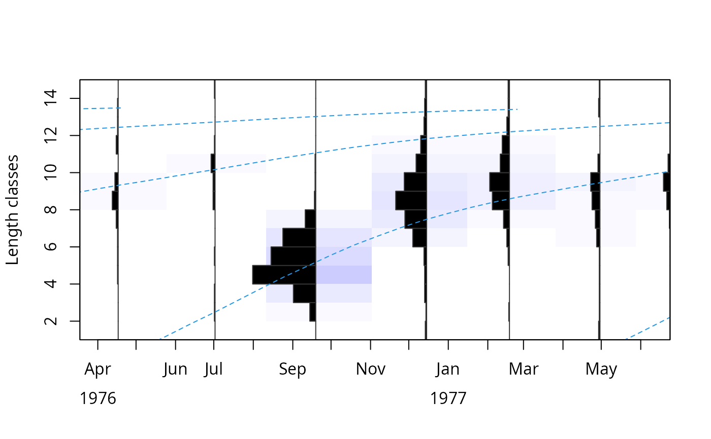
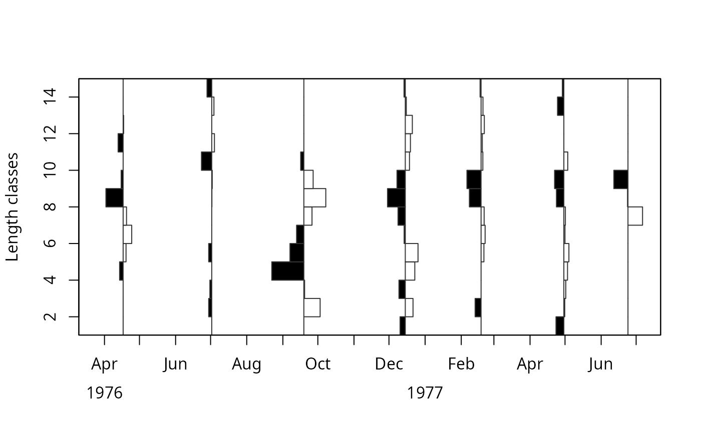
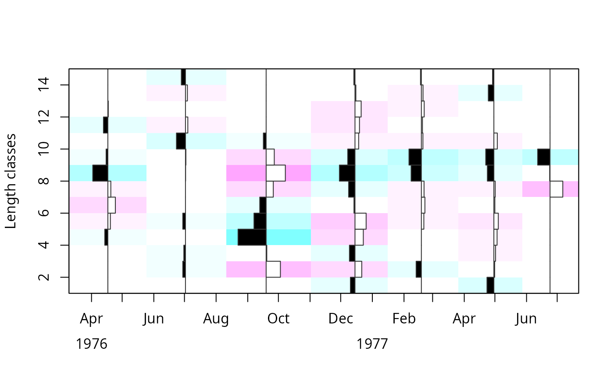
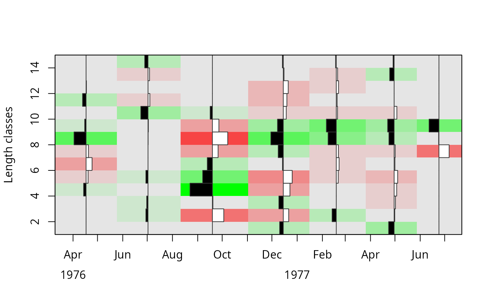
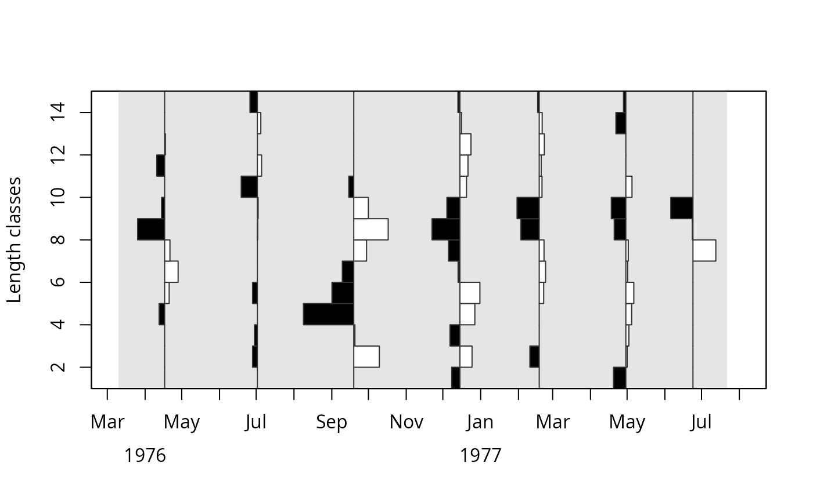
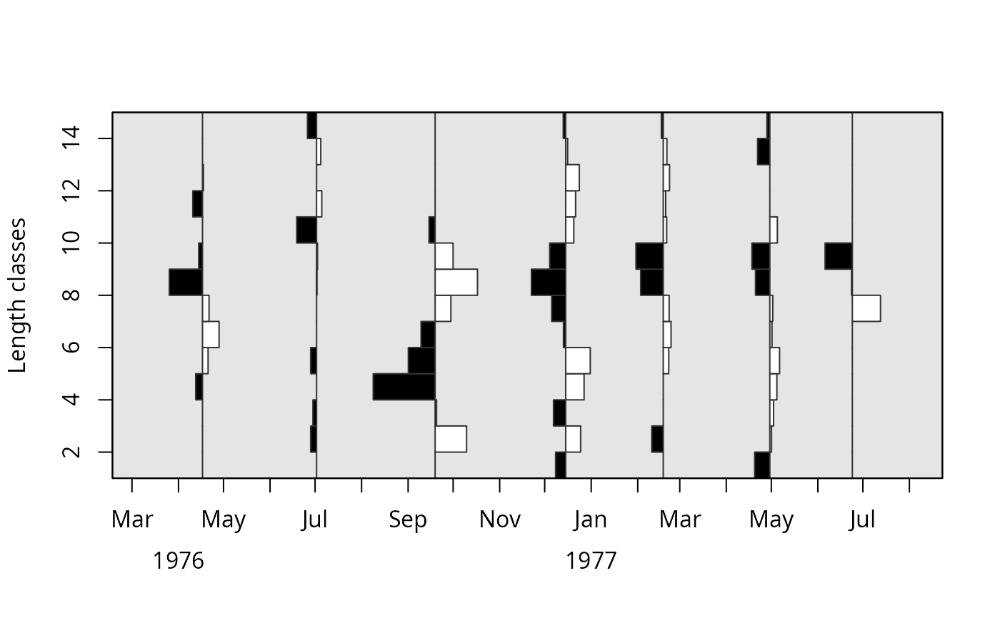
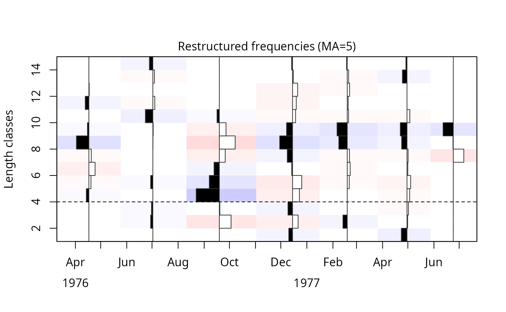

This function plots length frequency (lfq) samples sequentially
arranged in time. An object
of "lfq" class is obatined by applying the lfqRestructure
function. In case growth
parameters are known, von Bertalanffy growth curves can be plotted through the lfq samples.
Usage
# S3 method for class 'lfq'
plot(
x,
Fname = "rcounts",
par = NULL,
agemax = NULL,
rel = FALSE,
y = NA,
curve.col = 1,
hist.sc = 0.5,
hist.col = c("white", "black", "orange", "darkgreen"),
image.col = NULL,
region.col = NULL,
zlim = NULL,
zlimtype = "balanced",
date.axis = "traditional",
date.at = seq(as.Date("1500-01-01"), as.Date("2500-01-01"), by = "months"),
date.format = "'%y-%b",
xlab = "",
ylab = "Length classes",
draw = TRUE,
...
)Arguments
- x
a list of the class "lfq" consisting of following parameters:
midLengths midpoints of the length classes,
dates dates of sampling times (class Date),
catch matrix with catches/counts per length class (row) and sampling date (column);
- Fname
indicating whether restructured ("rcounts") or original frequencies ("catch") should be displayed (default: "rcounts")
- par
a list with following growth parameters (default NULL):
Linf asymptotic length,
K growth coefficient,
t_anchor time at length zero,
C amplitude of growth oscillation (optional),
ts summer point (optional);
- agemax
maximum age of species; default NULL, then estimated from Linf
- rel
logical; defines if relative numbers per length class should be plotted (relative to the sample size per sampling time, e.g. month). Default: FALSE.
- y
an optional second list of class "lfq" consisting of same parameters as x. This allows to plot samples from different sources (e.g. different fleets) on top of eachother, classes and dates have to correspond at least partially. Default is NA.
- curve.col
colour of growth curves (default: 1)
- hist.sc
defines the scaling factor to use for maximum histogram extent (x-axis direction). The default setting of hist.sc=0.5 will result in a maximum distance equal to half the distance between closest sample dates (i.e. ensures no overlap and full plotting within the plot region).
- hist.col
vector of 2 values defining coloring to use on negative and positive histogram bars (default: hist.col=c("white", "black", "orange", "darkgreen"))
- image.col
colour of image, by default (NULL) red and blue colours are used. To remove image coloring, set image.col=NA.
- region.col
colour of plotting region. Will overwrite image.col (default: region.col=NULL)
- zlim
the minimum and maximum z values for which colors should be plotted (default : NULL).
- zlimtype
indicating if zlim should be based on the range of the catch ("range") or based on the maximum absolute value in Fname ("balanced", default). This parameter is only considered if zlim is NULL.
- date.axis
the style of the x axis. By default the "traditional" approach is used with years under the months. Alternatively, by using "modern" the date is plotted in one line according to the chosen format
date.format.- date.at
the points at which tick-marks are to be drawn. Non-finite (infinite, NaN or NA) values are omitted. By default it is seq(as.Date("1500-01-01"), as.Date("2500-01-01"), by="months")
- date.format
format of date (default : "%y-%b")
- xlab
label of x axis (default : "")
- ylab
label of y axis (default : "Length classes")
- draw
logical; indicating whether growth curves should be added to lfq plot if parameters are provided (default : TRUE)
- ...
additional options of the plot function
Details
This function uses lfqFitCurves when growth
parameters are provided to plot growth curves, this can be turned off with
draw = FALSE.
References
Brey, T., Soriano, M., and Pauly, D. 1988. Electronic length frequency analysis: a revised and expanded user's guide to ELEFAN 0, 1 and 2.
Pauly, D. 1981. The relationship between gill surface area and growth performance in fish: a generalization of von Bertalanffy's theory of growth. Meeresforschung. 28:205-211
Pauly, D. and N. David, 1981. ELEFAN I, a BASIC program for the objective extraction of growth parameters from length-frequency data. Meeresforschung, 28(4):205-211
Pauly, D., 1985. On improving operation and use of ELEFAN programs. Part I: Avoiding "drift" of K towards low values. ICLARM Conf. Proc., 13-14
Pauly, D., 1987. A review of the ELEFAN system for analysis of length-frequency data in fish and aquatic invertebrates. ICLARM Conf. Proc., (13):7-34
Pauly, D. and G. R. Morgan (Eds.), 1987. Length-based methods in fisheries research. (No. 13). WorldFish
Pauly, D. and G. Gaschuetz. 1979. A simple method for fitting oscillating length growth data, with a program for pocket calculators. I.C.E.S. CM 1979/6:24. Demersal Fish Comittee, 26 p.
Pauly, D. 1984. Fish population dynamics in tropical waters: a manual for use with programmable calculators (Vol. 8). WorldFish.
Quenouille, M. H., 1956. Notes on bias in estimation. Biometrika, 43:353-360
Somers, I. F., 1988. On a seasonally oscillating growth function. ICLARM Fishbyte 6(1): 8-11.
Sparre, P., Venema, S.C., 1998. Introduction to tropical fish stock assessment. Part 1. Manual. FAO Fisheries Technical Paper, (306.1, Rev. 2): 407 p.
Tukey, J., 1958. Bias and confidence in not quite large samples. Annals of Mathematical Statistics, 29: 614
Tukey, J., 1986. The future of processes of data analysis. In L. V. Jones (Eds.), The Collected Works of John W. Tukey philosophy and principles of data analysis: 1965-1986 (Vol. 4, pp. 517-549). Monterey, CA, USA: Wadsworth & Brooks/Cole
Examples
data(alba)
res <- lfqRestructure(alba)
# simple plot or reconstructed frequencies
plot(x = res, Fname = "rcounts")

# add VBGF curves
plot(res, Fname = "rcounts", par = list(Linf = 14, K = 1.1, t_anchor = 0.3))

# add soVBGF curves, adjust hist.sc and xlim
plot(res, Fname = "catch", curve.col=4,
par = list(Linf = 14, K = 1.1, t_anchor = 0.3, C = 0.2, ts = 0.75),
hist.sc = 0.9,
xlim=range(res$dates)+c(-30, 0)
)

# adjust image colors
plot(res, Fname = "rcounts", image.col = NA )

plot(res, Fname = "rcounts", image.col = rev(cm.colors(21)) )

plot(res, Fname = "rcounts", image.col = colorRampPalette(c("red","grey90","green"))(21))

# solid plot region color
plot(res, xlim=range(res$dates)+c(-60, 60),
hist.sc=0.75, image.col="grey90") # leaves gaps

plot(res, xlim=range(res$dates)+c(-60, 60),
hist.sc=0.75, region.col="grey90") # full coverage

# low-level plot additions
plot(res)
abline(h=4, lty=2)
mtext("Restructured frequencies (MA=5)", line=0.25, side=3)
